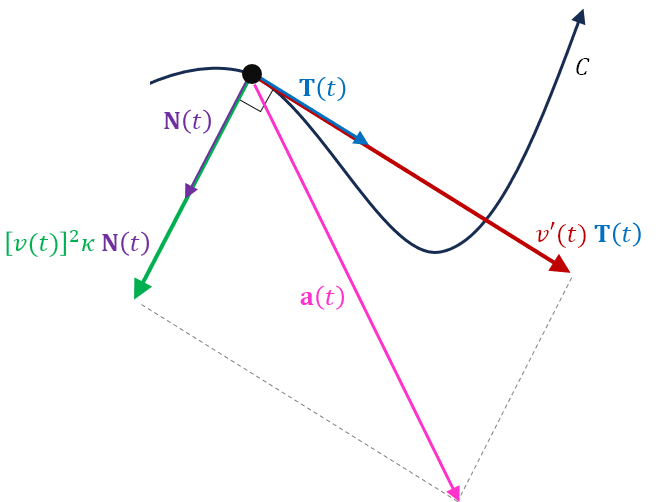
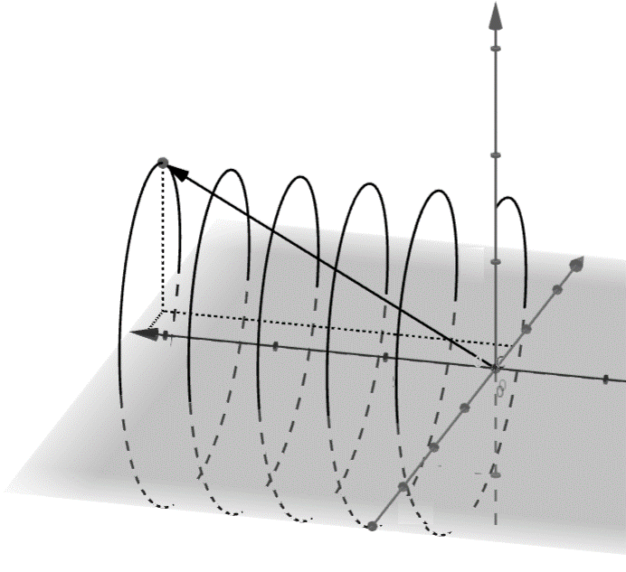

Tangential and Normal Components of Acceleration
The acceleration \(\mathbf{a}(t)\) of a particle whose motion is along the smooth curve \(C\), traced out by the twice differentiable vector function \(\mathbf{r}(t)\), lies in the plane formed by the unit tangent vector \(\mathbf{T}(t)\) and the principal unit normal vector \(\mathbf{N}(t)\). It is convenient to break the acceleration vector into two components:
- one parallel to the direction of motion, which is parallel to \(\mathbf{T}(t)\), and
- one normal to the direction of motion, which is parallel to \(\mathbf{N}(t)\).

We will derive the following essential formula.
Acceleration in Components
The tangential component of acceleration is denoted as \(a_{\mathbf{T}}\). This is the acceleration in the direction of motion.
Tangential Component of Acceleration
The normal component of acceleration is denoted as \(a_{\mathbf{N}}\). This is the acceleration perpendicular to the direction of motion.
Normal Component of Acceleration
Here is how these formulas come from what we already know.
First, we show that velocity is speed times the unit tangent vector.
Next, we rearrange a formula for curvature.
Also, since \(\mathbf{N}(t) = \frac{\mathbf{T}'(t)}{\|\mathbf{T}'(t)\|}\), we have \(\mathbf{T}'(t) = \|\mathbf{T}'(t)\|\,\mathbf{N}(t)\).
Now we use these with acceleration and the product rule for differentiation.
An Example
The motion of a particle is traced out by the below vector function. Find \(a_{\mathbf{T}}\) and \(a_{\mathbf{N}}\).

First find the speed and its derivative, which gives \(a_{\mathbf{T}}\).
Next find the curvature, which gives \(a_{\mathbf{N}}\).
The particle has a constant speed, \(v(t) = \sqrt{2}\). The tangential component of acceleration is the derivative of speed, \(a_{\mathbf{T}} = v'(t) = 0\). Because this is zero, the particle does not speed up or slow down in its direction of motion as it travels along a helix around the \(y\)-axis.
The normal component of acceleration is one, \(a_{\mathbf{N}} = [v(t)]^2\kappa = 1\), so the acceleration of the particle equals the principal unit normal vector, \(\mathbf{N}(t)\). The only acceleration the particle experiences is normal to its direction of motion, turning it along the helix. This has the effect of pulling the particle only and always toward the axis of the helix. What does this remind you of?